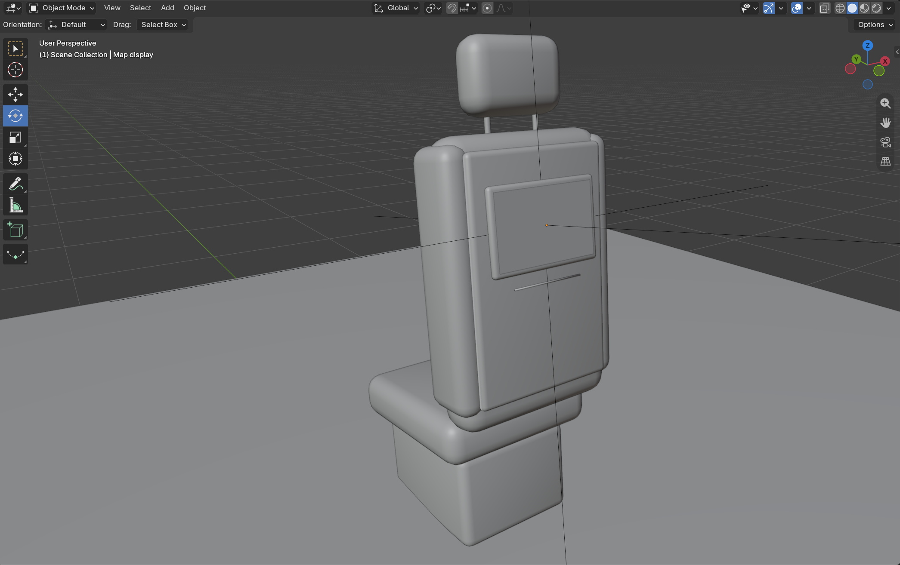
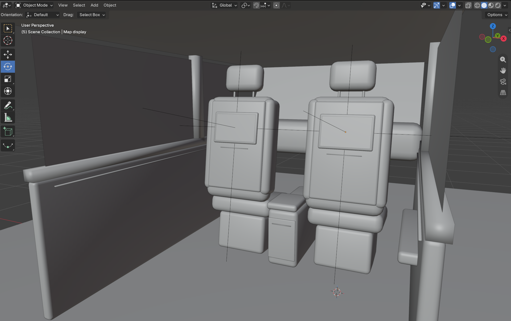
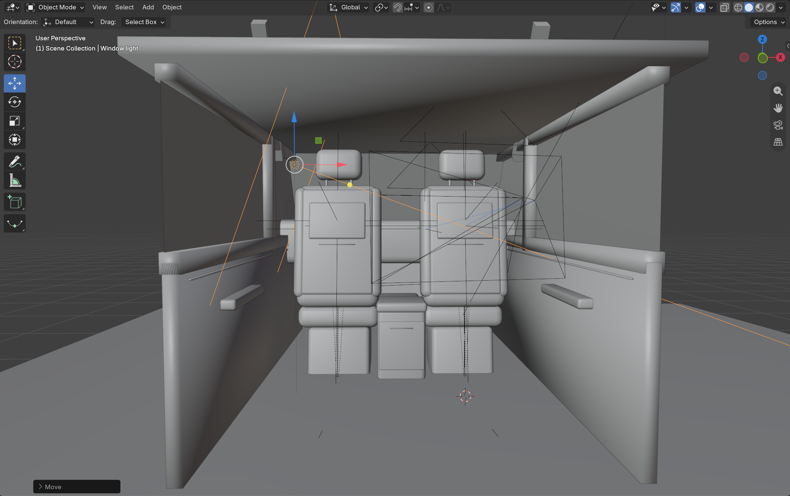

Part of my Waymo Connect project. I'm designing the screen on the back of the front seat in a Waymo, the one the passenger looks at during the ride. The goal is to help riders trust the car by showing what it sees and what it will do next.
Instead of modeling a full car interior, I focused only on what the passenger sees from the back seat: the two front seats, the screens on their backs, and just enough of the cabin around them so it reads as a car.
The screen will show a 3D map of the street around the car, with the other cars, pedestrians and the route. That map is the interface I'm designing.
I started with a single seat made from cubes: a base, a cushion, the seatback and a headrest on two thin posts. I added a Bevel modifier and Shade Smooth to round off the edges, then tilted the seatback back so it sits like a real car seat.

I added side bolsters and a hard shell on the back of the seat, which is where the screen mounts. The screen is a thin beveled frame with a flat plane inside it for the display. I parented the screen to the seat so it leans with the seatback.

I duplicated the seat, with the screen coming along, and moved it over for the driver side. Between them I added a center console with an armrest on top.

I added just enough of the car to give the screens context: the floor, roof, door panels with armrests, window frames, pillars and the dashboard. I made the parts overlap slightly so there are no small gaps or seams where they meet.

I placed the camera where a passenger's eyes would be, behind the right seat, looking at the screen. Every render is from the rider's point of view.

Here's how it's looking so far. The screens are blank for now. The next step is putting the 3D map on them.